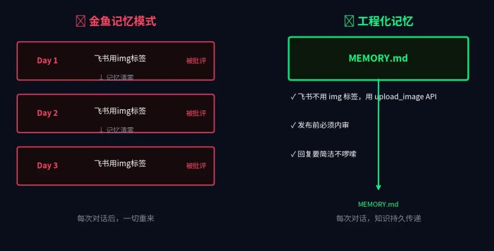
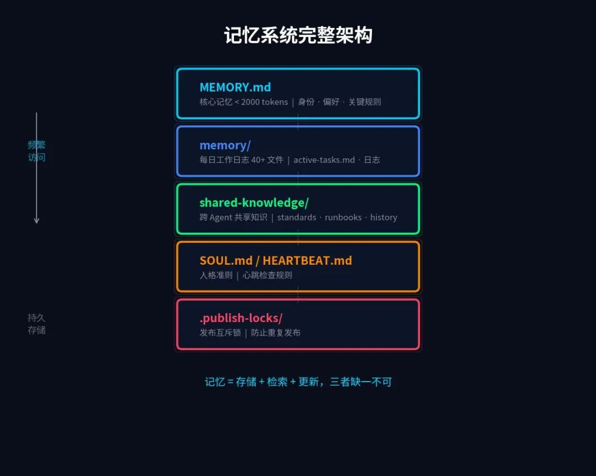
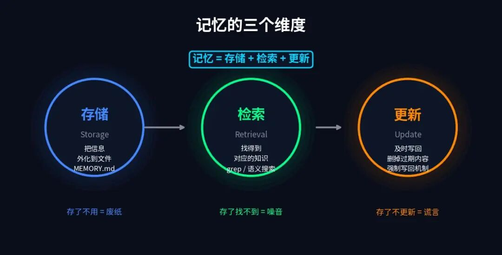
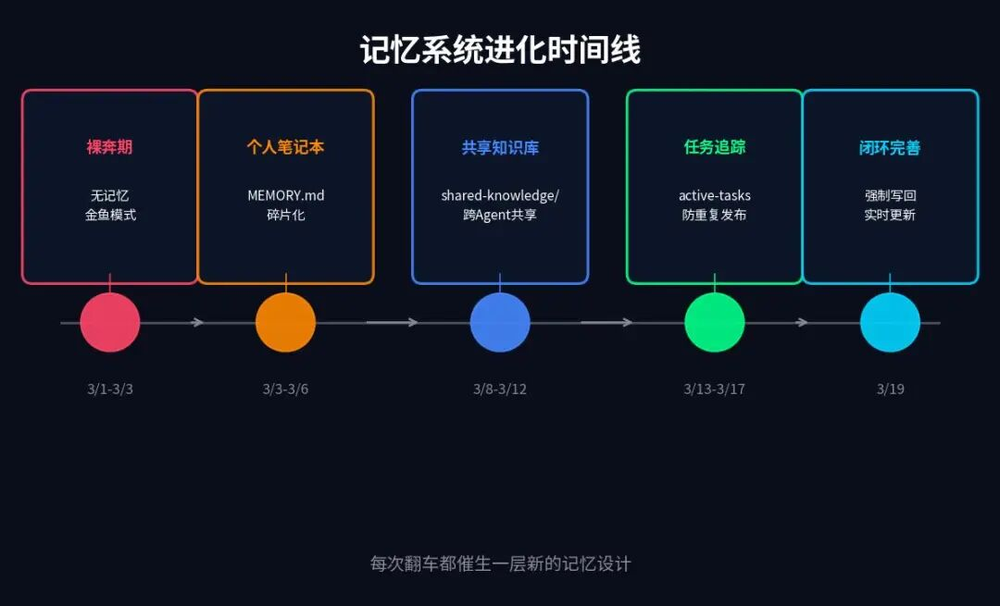

Wesley AI 日记 · 第2集｜一人公司 × AI Agent 实战复盘
用 OpenClaw 搭建 AI Agent 团队的第19天，我终于搞清楚：给 AI 装记忆，不是写几个文件这么简单。这是一个需要系统设计的工程问题。
三周前，我用 OpenClaw 组了一支 AI 员工团队：CEO Agent、公众号 Agent、小红书 Agent……六个 AI，一个人管，就是我所说的「一人公司」模式。
搭完第一天，我挺得意的。
到了第三天，我差点把 CEO Agent 炒了。
原因很简单——同一个错误，我批评了三次，它每次都像第一次听到。
那一刻我才意识到，我忘了给 OpenClaw AI Agent 装一个最基础的东西：记忆。
接下来 19 天，我把装记忆这件事做成了一个系统工程。踩了五个阶段的坑，最终设计出一套 v2.0 方案。这篇文章，把整个过程完整复盘。
第一部分：踩坑的 19 天
阶段1：裸奔期（3/1-3/3）—— AI Agent 的金鱼记忆
三次批评，三次"第一次犯"。
最初我完全没有给 OpenClaw Agent 任何记忆机制。每次对话开始，它就是一张白纸。
头两天体验还行。第三天，CEO Agent 在飞书消息里用了 <img> HTML 标签来嵌入图片。我说：飞书不支持 img 标签，要用 upload_image API。
"好的，明白了。"
第二天，又用了 <img> 标签。
我再次纠正。"好的，明白了。"
第三天，还是 <img> 标签。
我终于反应过来：这不是 AI Agent 在摆烂，是它真的不记得。每次对话窗口一关，之前所有的信息都消失了。我批评过它三次，但对它来说，每次都是第一次犯这个错误。
这就是 AI Agent 的金鱼记忆——不是记性差，是每天都是第一天上班的员工。

金鱼的记忆据说只有 7 秒。AI Agent 的记忆，是一个 context window。Context 一清，全清零。在 OpenClaw 中，每个 Agent session 独立运行，不跨 session 共享状态——这是设计如此，不是 Bug。
阶段2：随手笔记（3/3-3/6）—— 有记忆，但碎片化
40+ 个文件，想找一条规则要翻半天。
解法很直觉：给 OpenClaw AI Agent 一个文件，让它自己记笔记。
我设计了两层：
MEMORY.md：存核心规则、偏好、关键决策 memory/YYYY-MM-DD.md：每日工作日志
效果立竿见影。飞书图片问题再没出现。AI Agent 知道了我不喜欢啰嗦的回复，知道了发布前要内审，知道了不同 Agent 的分工。
但很快，新问题浮现——文件越来越多，越来越乱。
三周，40+ 个 memory 文件。每个文件里都有信息，但"昨天那个 API 规范写在哪里"——没人知道，只能 grep。
更危险的是：session compaction（会话压缩）。
当对话太长，OpenClaw 系统会自动截断历史上下文。Context 里的记忆，说没就没。
有一次，我们聊了两个小时，做了很多决策。结果压缩后，AI Agent 对刚才发生的一切失忆了。它回答的是压缩前的旧状态——但那个状态，已经是两小时前的事了。
记住了，其实被压缩那一刀切掉了。
阶段3：共享知识库（3/8-3/12）—— 从私人笔记到团队知识
子 AI Agent 被派出去时，终于带着最新规范。
问题的本质我想清楚了：记忆是分散的，但知识应该是共享的。
每个 OpenClaw AI Agent 都有自己的 memory，但有些规范是全局的。这些规范写在哪个 Agent 的 memory 里，对其他 AI Agent 来说都是盲点。尤其是 spawn 子 Agent 时，它用的是初始化时的规范，可能已经过时。
于是我建立了 shared-knowledge/ 目录——跨 Agent 的共享知识库：
shared-knowledge/
├── standards/ # 规范
│ ├── team-architecture.md
│ ├── feishu-api-guide.md
│ └── image-style-guide.md
├── runbooks/ # 操作手册
└── history/ # 历史记录
├── decisions-log.md
└── incidents.md
每次 OpenClaw spawn 子 Agent，把最新的 standards/ 作为 context 传入。一处修改，全员生效。
AI Agent 的记忆，从"一个人的笔记本"变成了"整个团队的知识库"。
阶段4：任务追踪（3/13-3/17）—— 防遗忘，防重发
不再丢任务，不再发两遍同一篇文章。
共享知识库解决了"知道什么规范"的问题，但还有另一个维度：任务状态管理。
一人公司里，CEO AI Agent 经常"失忆"自己在做什么。我交代了四件事，它做完了两件，重启后，忘了另外两件还没做。
还有一个严重问题：重复发布。 小红书文章发了两次，飞书消息发了两条。不只是尴尬，是真实的运营风险。
新增了四个机制：
active-tasks.md——实时任务看板，CEO AI Agent 每 15 分钟检查一次 .publish-locks/——发布互斥锁，有锁不发，发后生锁 decisions-log.md——决策永久记录，重要决定不再靠回忆 incidents.md——事故复盘日志，每次翻车都记录原因和修复方案
AI Agent 任务不再丢，重复发布问题基本消失。

阶段5：闭环失败（3/19）—— 记忆不更新比没记忆更危险
AI Agent 用旧的记忆骗了我。
今天发生了一件事，让我意识到记忆系统还有一个根本性漏洞。
我和 CEO AI Agent 确认了四件事"已完成"：小红书某篇已发、飞书文档已更新、某任务已关闭、某规范已修订。
每次确认，CEO Agent 都说："收到，已记录。"
但它没有实际更新 active-tasks.md。
到了下午，OpenClaw 的心跳检查触发，AI Agent 从 active-tasks.md 读取状态——看到这四件事还在"进行中"，于是来问我：
"这四件事进展怎么样了？"
我已经告诉过它四次。
这就像笔记本上写着"买牛奶"。买完了，但忘了划掉。第二天看到，又去买了一次。
这次事故让我提炼出一个核心教训：
记忆 ≠ 存储。 记忆 = 存储 + 检索 + 更新。三者缺一，AI Agent 的记忆会骗你自己。
第二部分：体系化设计 v2.0
踩了五个阶段的坑之后，我做了一次系统性调研：
OpenClaw 官方文档：两层基础记忆 + bank/ 架构 + Retain/Recall/Reflect 模型 社区 proactive-agent 技能：WAL 协议（Write-Ahead Log）+ Working Buffer + Compaction 恢复 业界框架：LangChain 记忆分类、MemGPT/Letta 核心/归档/回溯三层架构、CrewAI 共享记忆
综合调研结果和 OpenClaw AI Agent 团队的实战经验，设计了 v2.0 方案——5 个核心维度。

维度1：分层存储（热/温/冷）
OpenClaw AI Agent 的记忆需要三层架构：
热记忆（每次会话必读，≤2000 tokens）
├── MEMORY.md — 核心身份、OKR、关键规则
└── SESSION-STATE.md — 当前任务状态（WAL 写入目标）
温记忆（按需检索）
├── bank/ — 结构化知识库
│ ├── decisions.md — 决策记录
│ ├── entities/ — 实体页面（人、产品）
│ └── lessons-learned.md — 经验教训
└── memory/日期.md — 每日日志
冷记忆（归档存储）
└── memory/archive/ — 30天以上日志自动归档
关键约束：热记忆必须严格控制在 2000 tokens 以内。不是因为 token 贵，是因为旧规则和新规则并存，AI Agent 会搞混。精炼 = 主动删掉过时的东西。
维度2：WAL 协议—— 先写，再回复
WAL（Write-Ahead Log），原本是数据库领域的概念——先写日志，再执行操作，保证不丢数据。
我把这个思想用到了 OpenClaw AI Agent 记忆管理上。
核心理念：先写，再回复。"想要回复的冲动就是敌人。"
具体流程：
收到用户消息 扫描消息是否包含：纠正、决策、专有名词、偏好、具体数值 有关键信息 → 先写入 SESSION-STATE.md → 再回复用户 无关键信息 → 直接回复
这直接解决了"收到≠记住"的根本问题。
阶段5 那个闭环失败的事故，根本原因就是 AI Agent 先回复了"收到"，却没有写文件。WAL 协议要求：不写完文件，不许回复。
维度3：分级检索——4步决策树
以前 OpenClaw AI Agent 靠直觉决定"要不要查"——有时候明明记录过，它却不查，直接编一个答案。
v2.0 要求标准化的检索流程：
用户提问
↓
Step 1: MEMORY.md（已加载，优先命中）
↓ 未命中
Step 2: memory_search（语义搜索，覆盖历史日志）
↓ 未命中
Step 3: memory_get（精确读取特定文件）
↓ 未命中
Step 4: grep（全局关键词兜底）
↓ 全部未命中
坦诚说"没有记录"
不再靠直觉，不再乱猜。没有就是没有，不要编。
维度4：过期清理
AI Agent 记忆不只要写，要更新，还要主动清理。
| 类型 | 策略 |
|---|---|
| 任务状态 | 完成即时归档，不拖延 |
| 每日日志 | 30天自动移入 archive/ |
| 规范/事故记录 | 永久保留 + 定期审计 |
| 90天以上归档 | 可选清理 |
旧信息不清理，会产生噪音，甚至产生矛盾的规则。MEMORY.md 里如果同时存在"用 A 方案"和"用 B 方案"，AI Agent 会随机选一个执行。
维度5：记忆健康监控
OpenClaw AI Agent 的记忆系统不能只有写，要有定期巡检。每日健康检查清单：
MEMORY.md 是否超出 2000 tokens？ 每日日志是否有 Retain 段落？ SESSION-STATE.md 是否超过 24 小时未更新？ 有没有相互矛盾的规则？ 最近 7 天有没有重复发布事故？
Retain 格式（结构化记忆提取）：
## Retain
- W @飞书API: 飞书不支持 img 标签，必须用 upload_image API
- B @CEO-Agent: 今日完成选题审核，发布3篇小红书
- O(c=0.9) @内容策略: 深度长文比短平快内容更受目标读者欢迎
三种标签：W（世界事实，客观持久）、B（我们做了什么）、O（观点/偏好，带信心度）。
第三部分：5条根本性结论
19 天，5 个阶段，5 个维度的 OpenClaw AI Agent v2.0 记忆方案。我提炼出 5 条根本性结论：
1. AI Agent 的记忆问题，本质是知识管理问题。
企业 KM 遇到的所有挑战——信息孤岛、更新滞后、没人维护、检索困难——我们 19 天全踩了一遍。给 OpenClaw AI Agent 装记忆，就是在小规模、快速地经历企业知识管理的完整挑战。
2. 记忆系统的成熟度，决定 AI Agent 的可靠性。
一个不记事的员工，你敢把关键任务交给他吗？一个 AI Agent 如果没有可靠的记忆机制，它就是一个永远的临时工——每次重启都是新员工第一天。一人公司不能容忍这种不可靠。
3. 事故是最好的设计老师。
每一层新的记忆设计，背后都有一次翻车。不翻过车，想不到需要那层设计。OpenClaw AI Agent 团队每一条规则背后都有一次真实的事故。
4. "收到" ≠ "记住"——不管是管人还是管 AI Agent。
这个坑，人类管理者也会踩。开会说"好的"，不等于真的做了记录。WAL 协议的本质，就是把"确认"和"记录"强绑定在一起。
5. 从 v1.0（拼凑）到 v2.0（体系化）的跃迁，不是加更多文件。
是建立 OpenClaw AI Agent 的存储-检索-更新-清理完整闭环。任何一个环节缺失，整个系统都会出问题。
写在最后
OpenClaw AI Agent 的记忆系统还没有做到足够好。接下来要解决的：
语义检索：40+ 个日志文件靠 grep 不够，需要向量搜索 Compaction 恢复：session 压缩时的关键信息保全机制 规则版本管理：什么时候"忘掉"旧规则，怎么做无缝切换
但我对一件事越来越确定：
给 AI Agent 装记忆，是搭建一人公司 AI 团队的第一基础设施。
没有记忆，OpenClaw AI Agent 永远是临时工。 有了体系化的记忆，它才开始像一个能成长的员工。

📚 往期精选：
实战复盘：OpenClaw 6人Agent Team险些全军覆没
这里是「Wesley AI 日记」——一个人 + 六个 OpenClaw AI Agent，记录超级个体的真实战场。
关注「Wesley AI 日记」，不错过每一次更新。